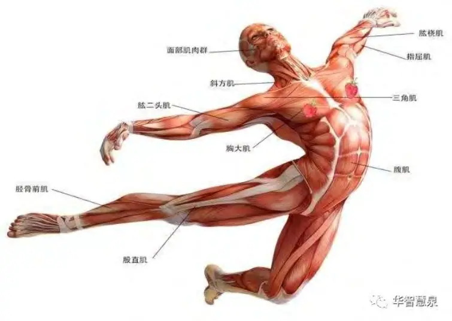

——以“主客互动本体论”与“三律医学”为基础的器官系统病理统一模型
摘要
现代医学在器官病理研究中长期以“功能丧失”为主轴，将人体划分为分离的器官系统，并依据病原、组织学、影像与生化指标对疾病进行分类。然而，这种“功能主义 + 客体中心”的模型在解释疾病本质、跨器官共病演化、病理互转与个体化表现方面愈显局限，很难系统阐明病程中多重因素的动态作用机制。诸如情绪、环境压力或免疫识别异常等因素，常常跨越传统学科与器官边界，对疾病走向产生深刻影响，却难以在“单一功能”或“病名分类”视角下得到整合性的说明。
为此，本文提出一个全新的猜想模型——
WDS器官SIO三律病谱猜想，即认为每一个器官都是一个主客互动整体（SIO）。在这一整体中，特征律、自由律、幸福律作为三大核心维度，分别对应器官对外部信号的正确识别（特征律）、物质与能量通道的通畅（自由律），以及与神经—情绪系统的和谐度（幸福律）。当任意一律或多律遭到破坏，即会在该器官引发特定类型的疾病；而不同失衡组合所展现的相互演化轨迹，则构成了该器官专属的“结构性病谱”。
在本文中，我们将这一猜想应用于十二个典型器官（心、肺、脑、肝、肾、胃、小肠、大肠、皮肤、子宫、乳腺、胰腺）展开论证与探索，提出了“结构病谱图”、“律失互转链”、“归律治疗路径”等新范式，力图从“本体结构识别—节律协调—张力释放”三个层面重构医学系统哲学。该猜想强调，医学研究若仅关注病名或局部病理，往往难以捕捉疾病真正的生成逻辑。唯有深入关注器官作为SIO整体时的结构动态特征与三律失衡机制，并将其系统性地运用于临床路径设计和病谱预测之中，才有望为复杂病理与跨系统共病等问题带来新的解决思路。
第一章猜想缘起：传统器官病理学的四重困境
在当代医学体系中，器官被严格区分为心、肺、肝、肾、脑、胃等多个系统，每个系统下又按照“功能丧失”或“损伤部位”来区分疾病类别。我们拥有庞大的诊断名词系统（例如心律失常、慢性阻塞性肺病、脂肪肝、肝硬化、肾衰竭、胃溃疡……），并不断利用先进仪器对这些病症进行精细化检测和干预。然而，在漫长的医学实践中，人们逐渐发现，虽然这些分类方法和干预手段确实有重要价值，但在以下四个层面上也凸显出日益明显的局限和困境：
1.1 功能主义的“片段化困境”
1.1.1 传统“功能”概念的产生与局限
医学将器官等同于“功能单位”，这一思维模式可追溯到近代解剖学和生理学的萌芽时期。17世纪到19世纪期间，通过大量的尸体解剖和生理实验，人类对身体各器官的功能有了逐步清晰的认知，最终在生理学上形成了“心脏负责血液输送，肺负责气体交换，肝负责代谢与解毒，肾负责排泄体内废物”等功能定位。
功能定位对临床医学的发展意义非凡：它让医生能够快速通过表面症状来推测潜在的器官病变。例如，气喘往往指向肺功能异常，水肿常常指向肾功能问题，黄疸多半是肝功能出现了障碍等。这些功能性线索为医学诊断提供了宝贵的初步依据。
然而，伴随时间推移，临床上开始显现这种“以器官功能论器官”的思路带来的片段化问题。我们会发现，“功能”只是一个表象或结果，并不等于器官本体本身。一旦器官的某些功能下滑或失常，我们经常将这种变化直接描述成“器官衰竭”或“功能损伤”，但很少有体系去探究器官在结构特征、内在互动过程以及与整体身心环境的联系层面是如何“失灵”的。比如：
肾功能不全：传统观念下，检验到血肌酐和尿素氮升高就表明肾脏排泄功能出现故障，但肾脏在此之前是否经历了微观结构的紊乱？是否和神经内分泌系统出现了异常的互扰？它们在多大程度上与个体心理或长期生活方式干预相关？这些问题往往被简化。
心力衰竭：心脏收缩力量不足、射血分数降低后，我们就判定其“功能”下降，却较少将其和心肌细胞膜电位、线粒体能量生成、冠脉微循环结构以及长期情感应激对自主神经的影响进行综合分析。
因此，当我们只聚焦“功能丧失”时，往往会忽视背后的结构性失衡和动态交互过程。结构——包括细胞层面的网络结构、血管和神经的分布结构，以及器官与外部环境之间的交互结构。若将“结构”比作“房屋的支撑与布局”，那么“功能”就仿佛是“房屋内供电供水是否正常”；只看到灯不亮、水不出，却不去思考房屋整体的支撑梁和管线布局是否断裂、腐蚀、错配，就难以做出系统性的干预。
1.1.2 功能主义对病因寻求的极化影响
基于功能的研究路线也往往形成“头痛医头、脚痛医脚”的思维定势。因为器官被当作功能化的独立单位，医学就更倾向于寻找某个“功能损坏”的直接原因：它是缺血？缺氧？感染？外伤？还是免疫紊乱？
这固然能帮助我们制订针对性治疗（如针对缺血可进行支架手术，针对缺氧可使用氧疗），但是对于复杂的多器官相互作用、慢性应激环境造成的综合性损伤，以及社会心理因素如何诱发病变，功能主义解释力显得不够充分。
更进一步，由于功能研究需要高度的专科分工，各个器官学科在学术和临床上都被切分得极为细致。这样带来的好处是“专业深度”持续强化，但坏处是“学科壁垒”越筑越高，医学界逐渐失去了一种从整体角度去观察和理解器官相互影响、功能与结构互相纠缠的统合视野。这也导致了临床上经常见到的“多专科会诊”仍难以形成统合治疗方案的局面。
因此，在当代医学的宏大版图中，“功能主义”贡献了精准诊断和精准治疗的效率，但同时也制造了某种“片段化困境”：当我们过度倚赖对器官功能的单点性说明，就会在疾病本质与人身整体性理解之间出现显著的脱节。
1.2 病名化的“病谱分裂困境”
1.2.1 病名体系的形成及其多层面矛盾
如果说功能主义是现代器官病理学的第一种“思维钳制”，那么“病名化”则是第二种具有巨大影响力的医学现象。随着诊断技术的进步，我们为不同病灶、不同病程阶段、不同组织结构受损方式都命名了各种疾病名称。如心脏有心律失常、心肌梗死、心力衰竭、心肌炎、心脏瓣膜病、心包炎、心内膜炎；肝脏则有脂肪肝、酒精性肝炎、病毒性肝炎、肝硬化、肝癌等。这些命名大多基于外观病变（炎症、坏死、增生）、功能障碍（衰竭、梗阻）或微生物病原（病毒、细菌、寄生虫）等维度。
这种庞大的病名体系固然为临床沟通、病例记录和统计研究提供了极大便利。然而，“一个器官多个病名”的现象，使得医生和患者在应对疾病时常常聚焦于“病名”本身，而忽视了这些病名背后是否存在贯穿始终的共同病理机制。比如，肝脏“脂肪肝—肝炎—肝硬化—肝癌”这一序列，如果把它当成截然不同的几种病名，我们就会分别给予其不同的干预，缺乏对其“病理连续性”的识别。
1.2.2 病名之间互转与表型差异
“病名化”还带来一个更严重的问题：我们看到不同病名之间有时可以互相转化，或是同时存在于同一个体内，但却很难从病名体系本身发现统一的生成逻辑。例如：
心律失常可以长期存在并演变为更严重的心衰，也可能突然诱发心肌梗死。有些病人先出现快速房颤，又转而变成缓慢性心律失常，这些转变背后可能牵涉到自律神经紊乱、心肌细胞信号错乱、局部缺血等各种机制交织，但我们仅从病名的表面关系难以捕捉这种互转的动力学。
同样一名患者的脂肪肝发展到肝硬化，有些病人过程缓慢，也有人在短短几年内就迅速恶化，为何个体差异如此之大？“病名化”给出的方法常常是“根据程度来称呼（轻度脂肪肝、中重度肝硬化等）”，却缺乏从深层结构去解释何以产生这种速度与严重度的差异。
这就造成了另一种临床矛盾：我们可以很好地描述病变形态，但难以解释病变之间的转换规律，以及患者病程中不同阶段症状与体征可能相差甚远的原因。临床实践中，不同患者在相同病名下的表现也千差万别，既有基因和生活方式因素，也有心理和社会因素的作用。仅仅依靠“病名+对症治疗”式的方案，往往显得捉襟见肘。
1.3 病因归属的“外因中心困境”
1.3.1 近代医学的病因观
自巴斯德提出细菌致病理论以来，现代医学对于“病因”的主要探寻方向长期集中于外部病原或环境因素，如细菌、病毒、霉菌、寄生虫，各种毒素、辐射、环境污染；或延伸至更细化的基因突变、家族遗传等。这些外因确实解释了大量传染病、遗传病和职业病的成因，并在公共卫生干预中效果显著。
但是，这样的病因观在解释非感染性慢性疾病，如2型糖尿病、代谢综合征、自身免疫病、心脑血管慢病等时，就显现出力不从心之处。尤其是随着社会心理因素对机体健康影响的研究不断深入，如何区分“外部因素”与“内部因素”变得愈发复杂。最为典型的问题如：
同样暴露在流感病毒环境中，有人很快发病，有人似乎毫无症状；
同样面临职业压力，有人出现重度抑郁并引发心血管事件，有人却相对抗压；
同样携带某些“致病基因”，有的人却终生无大碍。
这些现象提示我们：外部病原或环境毒素只是疾病发生的“部分触发因子”，并非全部；体内自身的反应机制（免疫模式、代谢调控、神经内分泌调节等）的稳定与否，也起到了决定性作用。可是传统医疗体系更多地习惯从“外因”来定义疾病：找到了病原微生物或异常基因突变点，就认为找到了“病因”。这在宏观和微观层面都存在一定的局限性。
1.3.2 内外交互：忽视器官本身的“自组织”属性
人体并非被动地接受外界刺激，而是一个拥有高度自组织能力的复杂系统。当外部环境发生变化、病原或应激出现时，机体会启动一系列主动的自稳态调节（allostasis过程），包括免疫应答、神经反射、激素分泌等。人体每一个器官，都存在大量的局部调节和与其他器官的协同模式。
传统的病因论在“外因”维度聚焦时，常常将器官视为一座“被攻击的城堡”，要么被微生物攻陷，要么被外源毒素侵袭，却忽视了器官自身在结构和功能上的动态演化。例如，当细胞长期处于慢性炎症和应激中，它们并不仅仅是消极地受损，而可能会主动进行适应性改变，比如代偿性增生、结缔组织增生、信号通路的重新编程等。这种适应与反馈过程贯穿疾病的发生、发展与转归之中，却在“外因中心论”中常被简化或边缘化。
这样也会导致一个又一个临床难题：为什么同样的外因刺激（比如某种病毒、某种化学毒物）在不同人身上会引发截然不同的器官病变，有些甚至会发展为自身免疫病？原因在于每个人的器官都有各自的主客互动特征，面对外来干扰所做出的“自组织反应”也就不同。如果只将注意力投射到病原，容易导致对这种复杂机制的忽视，也无法为临床决策提供更有针对性的方案。
1.4 认知碎片的“交叉盲区困境”
1.4.1 超分化专科带来的信息割裂
现代医学高度分科：心内科、呼吸科、消化科、肾内科、风湿免疫科、内分泌科、神经内科、精神科……每个专科医师都对本专科病症有着深入掌握，却也可能忽视其他系统的关联因素。这样的专科化在现实中非常必要，因为每个学科积累的知识量都极其庞大，不分科难以精细研究和临床诊疗。然而，超分化之后，专科之间缺乏交流又造成了知识碎片化，从而出现了对“交叉地带”的盲区。
1.4.1.1 典型案例：跨器官共病
心肝共病：在临床上时常见到某些肝硬化患者同时出现心功能异常，甚至有“肝源性心脏病”之说；反之，有些长期心衰的患者往往伴随肝瘀血甚至肝功能受损。这种交互不是传统“单向因果”可以简单概括的。
肺肠互相影响：慢性阻塞性肺病患者常有肠道菌群紊乱；部分严重肠漏患者会影响整体氧合能力，以及机体免疫反应的模式。这些研究都在提示肺与肠道之间存在重要的免疫学和神经内分泌交互，却往往被临床上各自分开管理。
子宫-情绪通道：妇科内分泌失调与心理情绪波动之间的相互影响亦广为人知。月经周期紊乱、痛经、多囊卵巢综合征等常与焦虑抑郁等情绪障碍纠缠在一起，难以简单剥离。
1.4.1.2 全身性疾病的多器官联动
免疫系统疾病（如系统性红斑狼疮、类风湿性关节炎）往往牵涉到多个器官与组织，对不同系统产生不同程度的损害；抑郁和焦虑等精神心理障碍，也能显著影响心血管、消化、内分泌等多个系统。可是临床上，患者需要跑多个科室，每个科室各治各的，常常顾此失彼。
这些现象都提示我们，器官间的相互作用、交叉调控是普遍存在的，单一科室的视角无法穷尽对病情的全面认知。然而，在当前模式下，人们对这些交叉作用的系统性机理缺乏统一的本体论与方法论，也缺少一套从器官整体结构动态来分析和干预的通用框架。
小结
以上四大困境——功能主义的片段化困境、病名化的病谱分裂困境、病因归属的外因中心困境和认知碎片的交叉盲区困境，共同构成了当代器官病理研究在理论与临床应用层面上遇到的重大挑战。这些困境提示我们，需要跳出传统“器官=功能单位”或“器官=病原攻击地”乃至“器官=病名分类器”的思路，转而建立一种更能理解器官作为一个动态系统在外因与内因交汇处自我演化的新范式。
WDS器官SIO三律病谱猜想便是在这样的背景下应运而生：它试图提供一个器官本体论，即将器官视为一个主客互动（Subject-Interaction-Object, 简称SIO）的复合体，关注其结构性失衡与节律失调如何诱发疾病，并兼容“外因-内在结构-多器官交互”之综合视角。这或许能为上述困境提供某种思路上的突破契机。

第二章猜想基础：SIO结构本体 + 三律医学
在上一章，我们初步概述了传统器官病理学所面临的困境，以及医学界对新范式的迫切需求。本章将介绍“WDS器官SIO三律病谱猜想”的理论基础，其中包括主客互动本体论（SIO）和WDS三律医学的核心概念。通过理解SIO结构及三律之间的关系，我们才有可能进而推导出“器官病理源自三律失衡”的体系化理论。
2.1 主客互动本体论（SIO）
2.1.1 SIO的缘起与基本思想
SIO是英文Subject–Interaction–Object的缩写，即“主体—互动—客体”。该概念最初源于一种哲学与系统论结合的思考：世界上的任何存在，都不仅仅是孤立的主观或客观实体，而是一个同时具备主观要素、客观要素，以及两者在具体情境中不断发生交互过程的动态复合体。用于人体时，便可以理解为：
S（Subject）：指器官中与主体相关的维度，如神经调控、意识、情感、意志、行为习惯甚至潜意识影响等；
I（Interaction）：指器官自身各种信息流、物质流、能量流的传递与反馈机制，也包括器官与整体身心环境之间的交互过程。例如激素、神经递质、免疫信号的动态平衡；
O（Object）：指器官可被检验、测量、观测到的“物质结构”，如解剖形态、组织学结构、细胞类型、化学成分等。
在传统医学中，器官主要被视为“物质客体（O）”，有时也注意到其中的功能活动或神经调控（可视为部分I），但主体因素（S）常常被忽视或边缘化，除非讨论到精神科或神经科才将其当作重点。SIO理论则认为，人体内的每一个器官都同时具有S、I、O三重性质，三者不可分割：
1. 器官内在的“主”：即器官对于自身节律和外界刺激的感知、反应与调配能力。
2. 器官的“互”：即器官在体内外环境中与其他器官、神经、免疫、内分泌及心理情绪系统进行信息和物质交换的过程。
3. 器官的“客”：即器官外显的解剖学与组织学形态，以及各种可测量的理化指标。
2.1.2 器官为什么有“主体性”？
“器官有主体性”这一命题听起来会令人疑惑：难道我们的肝脏、肾脏、心脏也有“思想”或“意识”吗？当然，这里所指的“主体性”并不一定是和大脑同等层次的有意识活动，而是指器官在生命进程中所具备的对自身状态进行一定程度感知、调控和适应的能力。现代生理学研究已经证实，每个器官中都存在多层级的局部神经网络、免疫感受器以及与自主神经中枢互通的反射弧。器官在很多情况下“自己”就能完成局部调节与反馈，无须大脑直接干预。比如：
肠道的“肠神经系统”拥有大量神经元，被称为“第二大脑”，可独立于中枢神经发挥局部调节作用；
心脏内的传导系统不但控制心律，还在一定程度上对情绪激素做出反应；
肝脏在面临毒素累积时，会提升解毒酶的活性并调节血流分配，这也是一种主体性应对；
免疫系统更是广泛分布于身体各处，时刻监视并调控局部的炎症反应。
由此可见，器官并非只是被动执行“中枢命令”的机械执行者，而是具备一定层次的“自治”或“主体性”特征。在SIO框架下，这种“自治”即是S维度的体现。
2.1.3 器官的交互性（I）与整体系统
器官与机体整体之间的交互极为复杂。从血液循环到神经内分泌，再到免疫和淋巴系统的全身性联动，任何一个局部器官的活动都可能影响全身状态，反之亦然。在SIO框架中，I（Interaction）既包含器官内部各亚结构之间的交互，也包含器官与外部环境、与其他器官和与中枢神经系统之间的持续对话。正是在这种交互过程中，器官的功能与结构才得以维持，也才更容易出现复杂多变的病理状态。
2.1.4 器官的物质客体（O）维度
O指的是我们在医学检查中可观察或测量到的物质层面，如心脏的解剖形态（心肌、瓣膜、冠脉等）、肝脏的组织结构（肝细胞、胆小管、汇管区等），以及基因、蛋白、激素水平等。现代医学相当擅长在“O”维度做文章，尤其是病理切片、分子生物学检测、影像学技术（CT、MRI、超声、内镜检查等）都极大丰富了我们对器官O维度的认识。但是，如果我们只停留在“O”层面，就难以解释器官在社会心理应激或内在情绪紊乱时发生的深层改变，也难以回答为什么相同的形态学变化在不同患者身上有不同的症状体验或病程轨迹。
因此，SIO认为，每个器官都是一个具有主体(主)-交互(互)-客体(客)三重属性的整体。疾病往往是这三者之间的平衡被打破，或在其中一个维度或多个维度发生紊乱所导致的。只研究器官的O，而忽视器官在S、I层面的动态变化，就会错失更深层的病理认知与治疗契机。
2.2 WDS三律定义
基于SIO理论，有学者提出了“WDS三律”概念，用以更进一步解析人体或器官在主体(主)-交互(互)-客体(客)层面，所遵循的核心内在运行原则。这三律被分别称为“特征律、自由律、幸福律”，它们并非孤立，而是共同作用于器官的生理与病理过程中。
| 三律 | 定义 | 器官中的表现 |
|---|---|---|
| 特征律 | 是否能够稳定而准确地识别“什么是该吸收、该处理、该清除” | 免疫识别、代谢识别、信号识别 |
| 自由律 | 结构内的信息、物质、张力是否流通顺畅 | 排泄、排毒、排气、蠕动、流动 |
| 幸福律 | 是否能有效释放张力、保持节律并带来整体和谐体验 | 节律调节、神经情绪共鸣、愉悦或放松的生理反应 |
2.2.1 特征律：识别与归属的能力
特征律是指器官对自身与外界环境中各种信息进行识别、判断、筛选的能力。可以将其想象成一个“筛选与配置系统”，类似免疫系统识别自我与非我、消化系统对食物营养与垃圾废物进行辨别、肝脏对毒素进行分解等。若特征律失衡，往往出现以下问题：
免疫错乱：身体对自身组织的错误攻击（如自身免疫病），或无法正确识别外来的病原体；
代谢误判：肝脏或胰腺等器官没能正确处理糖脂类物质，导致脂肪堆积或血糖失控；细胞过度增殖：当特征律崩溃时，细胞正常生长模式被打破，癌症风险随之增加。
2.2.2 自由律：流动与疏通的能力
自由律关注的是器官内部各通路的通畅度以及与外部交换的顺利程度，包括局部血液循环、淋巴回流、神经冲动传导、内分泌激素释放与代谢物的排泄等等。若自由律受损，常见问题有：
管道阻滞：如肠梗阻、胆道阻塞、血管狭窄等；
功能迟缓或亢进：如胃肠蠕动过慢或过速、心律紊乱等；
局部瘀滞：如血栓、炎症因子堆积等，从而进一步引发器官损伤。
2.2.3 幸福律：协调与愉悦的能力
幸福律指的是器官在整体身心体验中的协同和谐度，也可以理解为器官在内部或与外界环境之间的“张力舒展”能力。若一个器官的活动节律和主体神经情绪系统相互配合良好，机体就会体验到舒适与和谐，反之则产生痛苦、紧张、焦虑等一系列不良体验。若幸福律失衡，很可能出现：
节律紊乱：例如失眠、肠易激综合征、心律失常等；
高张力或低张力状态：表现为慢性疼痛、功能性消化不良、慢性疲劳甚至抑郁；
情绪性器官病变：如高应激状态下出现的溃疡、功能紊乱等。
需要强调的是，“幸福律”并不是一个玄学概念，而是指器官与中枢神经、内分泌及免疫系统协同后在生理与心理层面呈现的整体舒适度和节律性，具有生理学、神经学、心理学等多重基础。
2.3 SIO与三律的关联：为什么说器官病=三律失衡？
2.3.1 三律是SIO的三大支柱
当我们将SIO与三律概念合并时，就可以看到下列对应关系：
S（主体维度）主要关联“特征律”和“幸福律”，因为主体不仅要识别自己和外界，还要维持愉悦和谐；
I（互动维度）与“自由律”和“幸福律”关系紧密，因为互动过程需要流动、交换和良好的节律；
O（客体维度）则与“特征律”和“自由律”联系明显，因为器官的物质结构、外在通道需要正常的识别和流动才能维持健康。
三律实际上是SIO在器官层面具体化的三大核心属性。任何器官若在特征律、自由律或幸福律出现明显偏差或破坏，都意味着该器官在SIO某处失衡，进而导致病理出现。
2.3.2 结构失衡与功能退化的区分
三律失衡并不一定立刻表现为传统意义上的“功能下降”，有时它更早先体现在结构或节律的微妙改变。例如，一个人可能检验指标还在正常范围，但已经出现“感觉不适”“情绪紊乱”或“食欲异常”等主观症状，这往往是幸福律或特征律出现波动的早期信号。如果没有及时识别与干预，后续就可能发展为更典型的“可检测的功能损伤”。
2.3.3 统一的病谱框架
三律理论提供了一种思路：将各类疾病视为在特征律、自由律、幸福律三者的平衡图谱上位置不同的失衡结果。虽然表面病名多种多样，但究其本质，都可从器官的SIO三律角度找到成因与规律。这样就可能建立一个统一的“病谱”框架，使我们能够解释为何有些病容易互相转化，以及为何同一病名在不同个体上表现差异巨大。
第三章猜想内核：
器官病 = 其SIO三律结构失衡的具体显现
通过前两章的脉络梳理，我们已经看到了传统医学范式面对的重重困境，以及SIO与三律理论为我们提供的全新视角。本章将提出本书的核心命题：“器官病理的根本原因，在于器官作为SIO子系统时，其三律中的一律或多律发生了失衡或崩溃。”这里我们将详细阐释这种失衡是如何形成的，以及它在临床上如何体现为多种疾病。
3.1 核心命题：器官 = 一个SIO子系统，疾病 = 三律失衡
3.1.1 器官作为SIO子系统的涵义
在整体生物体的层面，人是一个更大的SIO系统，而人体中的每个器官也可以被视为相对独立的SIO子系统。这种“嵌套结构”在复杂系统理论中并不罕见：一个复杂系统往往由许多层级更低的复杂子系统组成，每个子系统既保持一定程度的自主性，也与更高层级的系统紧密互动。
当我们把器官当作一个SIO子系统，就意味着：
1. 这个器官也具备S（主体）维度，能够主动地感知与调节；
2. 它也具备I（交互）维度，需要与外部进行各种物质、能量和信息交换；
3. 它也具备O（客体）维度，是一个可被解剖学与理化指标检测的物质系统。
3.1.2 疾病 = SIO三律失衡
所谓“器官发生疾病”，往往就是在这个子系统的S、I、O三方面中，至少有一条或多条“律”出现严重紊乱或崩溃。三律失衡一般会呈现一种渐进性的阶段演化，从最初的微小失调到后期的明显病变，可能历经若干个互相影响与反馈的环节。因此，如果我们能在早期通过对三律的检测与评估，洞察到器官正走向失衡，就可在疾病尚未呈现典型“病名”之前提前干预。
3.2 三律失衡的类型与病理表现
在一个器官中，“特征律、自由律、幸福律”并非全部同时完好或同时崩溃，常常有一个或两个先出问题，然后带动其他律崩溃，最终形成多重病理。以下是一个可能的失衡谱系示意（仅为理论建模，实际中个体差异很大）：
| 三律失衡类型 | 对应病理形式（示例） |
|---|---|
| 特征律单崩 | 免疫错乱病、自我攻击病、癌前状态、过敏性反应等 |
| 自由律单崩 | 通路阻滞病、功能迟缓、结构膨胀或萎缩（如某些梗阻、慢性炎症） |
| 幸福律单崩 | 节律紊乱、功能正常但“主诉强烈”的病（如功能性肠病、焦虑相关躯体症状） |
| 特征+自由律双崩 | 结构性破坏型病（如硬化、溃疡、组织坏死、器官失代偿） |
| 自由+幸福律双崩 | 疼痛型病、僵硬型病、焦虑诱发型病（如慢性疼痛、纤维肌痛、功能紊乱） |
| 三律全崩 | 典型癌症、器官衰竭、系统性死亡前状态 |
3.2.1 特征律单崩
特征律单崩时，往往可见识别与判断能力出问题。最典型的是免疫系统对自我与非我识别的紊乱，导致自身免疫病或过敏反应。例如，甲状腺自身免疫性疾病、1型糖尿病的免疫攻击、肝细胞对外界毒素错误处理等等。这种情况下，器官在早期尚能维持一定通路畅通（自由律较完好），也暂时不会产生剧烈疼痛或不适（幸福律表面正常），但内部识别功能已出现深层隐患，若不加干预，常常会引发进一步的病理连锁。
3.2.2 自由律单崩
自由律的破坏最常见的特征是阻滞或淤积。例如胆道阻塞、肠梗阻、血流阻塞、支气管阻塞（肺气不畅）等，这在临床上可以快速呈现较明显的功能障碍。由于自由律直接涉及物理流动通道，患者通常较早出现“功能受限”症状，如疼痛、憋闷、胀满等。若此时特征律和幸福律尚能弥补部分失衡，机体可能尝试各种代偿手段（如侧支循环形成、炎症反应清除通道堵塞），但长期来看，若阻滞无法解除，就会引发特征律或幸福律的连锁崩溃。
3.2.3 幸福律单崩
幸福律与神经情绪系统的关联最为紧密。若一个器官陷入“幸福律单崩”，往往表现为节律紊乱但尚未在结构或免疫识别上出现重大破坏。这一类在现代医学中经常被称为“功能性障碍”或“心身疾病”，如功能性胃肠病（IBS）、功能性头痛、女性痛经但无明显器质性病变等。这些问题并不简单是“心理因素”导致，而是器官本身在SIO层面出现了严重的节律/张力失调。
有些患者常被误以为“检查不出任何异常”，实则是幸福律出了问题，传统检查着力点主要在O（物质层面）或某些指标，尚未能捕捉这种更微妙的失衡。
3.2.4 多律连锁崩溃
当病理进展加剧，就常常呈现多律同时或先后崩溃的态势，比如特征+自由律双崩，会导致器官组织结构大面积破坏或纤维化；再比如自由+幸福律双崩，常见顽固性疼痛、器官活动障碍并伴随情绪困扰。当三律全崩时，往往是器官癌变或终末衰竭，甚至引发生命体整体的崩溃。
3.3 三律失衡与病程演进的动态性
3.3.1 失衡在时间维度上的演化
在临床观察中，器官的三律失衡并不是“一步到位”的，而是随着时间不断累积的小失衡最终变成大失衡。有时甚至呈现出“往复波动”：患者在某段时间压力增大，幸福律开始波动，引发一些功能性症状；若能及时自我调整或治疗，幸福律得到修复，病程便暂时停滞。但如果在下个阶段外界刺激更强，或内部补偿机制衰竭，那么失衡就会继续恶化，引发免疫识别混乱（特征律失衡）或通道阻滞（自由律失衡），最终走向实质性病理。
3.3.2 “律诱发性互崩”机制
在SIO三律模型中，一个律的失衡常常诱发另一个律也出现问题，这称为“律诱发性互崩”机制。例如：
特征律失衡导致免疫过度反应或错误反应，会引起局部炎症，一旦炎症过度就会影响通路畅通（自由律受阻），并且产生疼痛或不适（幸福律失调）。
幸福律失衡使得器官长期处于紧张或紊乱状态，会干扰其对外界信息的判断（特征律受影响），也可能导致代谢紊乱、血管痉挛等，从而损伤自由律。
这种多律联动机制恰恰说明，疾病并不只是简单的“机械损坏”，而是一个自组织系统在不同维度出现 cascade（级联）式连锁反应的结果。
第四章病谱可视化模型：SIO三律病谱图
为更形象地呈现“器官三律失衡”的进程和互转关系，我们可以尝试建立一种病谱可视化模型，称之为“SIO三律病谱图”。
4.1 病谱图的基本结构（文字表达）
一个简化的示意图可能如下所示：
特征律崩溃
↙ ↘
初期病（如过敏）癌前病
↓ ↘
自由律阻断 → 中期病（炎、胀、硬化）
↓ ↓
幸福律崩溃 → 晚期病（痛、焦虑、抑郁共病）
这里用“箭头”指示失衡的可能路径——先从特征律出问题，引发自由律阻滞，最后导致幸福律的全面崩溃。当然，不同器官可能有不同的优先崩溃路径，也有的可能先是幸福律崩溃，再发展成特征律混乱。核心思路是：病程随时间发展，多个律之间具有诱发性连锁，最终走向更深层的结构破坏和整体衰竭。
4.2 三律互转原则
4.2.1 律之间的相互牵引
如前所述，三律并非割裂，而是相互影响。因而，如果我们在临床干预中只关注某个律的问题，而忽视其他律的动态变化，就可能导致代偿性病谱漂移：即你治好了A律的问题，却让B律或C律进一步恶化。例如：
为了抑制免疫过度反应（特征律失衡），患者大量使用免疫抑制剂，短期可能缓解症状，但会对幸福律和自由律造成负面干扰，例如肠道菌群失衡或情绪/代谢紊乱，最终并未真正解决器官整体健康问题。
为了缓解疼痛不适（幸福律紊乱），一味使用止痛药物，却没有探究自由律是否存在顽固性阻滞（如狭窄或血供障碍），结果让原有阻滞问题进一步加重。
4.2.2 不同器官的三律优先顺序
各器官的结构与功能特性不同，其“三律”往往有不同的“易崩”顺序。举例而言：
肝脏以解毒、代谢识别功能（特征律）为核心，因此最常先崩的往往是特征律（错误处理脂肪、毒素或免疫反应），然后自由律和幸福律陆续受影响；
肾脏多与体液排泄、维持内环境稳定（自由律）关系紧密，因此常是“自由律先崩”，进而诱发代谢识别和情绪失衡。
在下一章，我们会结合12个典型器官展开更具体的阐述。
第五章实证应用：在12个器官中的适配性验证
本章将以人体常见且临床研究较丰富的十二个器官为例，初步验证SIO三律病谱猜想的可适用性。这十二个器官分别是：心、肺、脑、肝、肾、胃、小肠、大肠、子宫、皮肤、乳腺、胰腺。选择它们的理由在于，这些器官涵盖循环、呼吸、消化、内分泌、生殖和神经系统的核心功能，常见疾病也广泛出现于临床实践。
5.1 基本表格与思路
下表（简化版）展示了每个器官常见的三律主崩顺序与对应疾病进程路径，帮助我们直观把握猜想的要点。
| 器官 | 三律主崩顺序 | 对应疾病进程路径 |
|---|---|---|
| 心 | 幸福律 → 特征律 → 自由律 | 心律失常→心悸→心梗→心衰 |
| 肺 | 特征律 → 自由律 → 幸福律 | 哮喘→COPD→纤维化→肺癌 |
| 肝 | 特征律 → 自由律 → 幸福律 | 脂肪肝→肝炎→肝硬化→肝癌 |
| 肾 | 自由律 → 特征律 → 幸福律 | 糖尿病肾→肾小球肾炎→尿毒症 |
| 脑 | 特征律 → 自由律 → 幸福律 | 焦虑→强迫→抑郁→痴呆 |
| 胃 | 幸福律 → 自由律 → 特征律 | 消化不良→胃炎→溃疡→胃癌 |
| 小肠 | 幸福律 → 自由律 → 特征律 | IBS→SIBO→克罗恩→肠漏 |
| 大肠 | 自由律 → 幸福律 → 特征律 | 便秘/腹泻→肠炎→结肠癌 |
| 子宫 | 幸福律 → 特征律 → 自由律 | 痛经→多囊→肌瘤→子宫癌 |
| 皮肤 | 特征律 → 自由律 → 幸福律 | 湿疹→脂溢性皮炎→银屑病→皮肤癌 |
| 乳腺 | 幸福律 → 特征律 → 自由律 | 胀痛→结节→纤维瘤→乳腺癌 |
| 胰腺 | 自由律 → 特征律 → 幸福律 | 胰酶失控→胰腺炎→胰腺癌 |
接下来，我们将结合每个器官的生理病理特点，对这一顺序做初步探讨，以说明该模型的合理性。当然，在实际临床中可能存在例外或不同路径，但整体趋势常在此范畴之内。
5.2 心脏：由幸福律先行崩溃，逐渐牵连特征律与自由律
5.2.1 心脏幸福律的重要性
心脏被认为与情绪、神经系统关系极其密切。在心理压力下，人会出现心悸、心率加快或心律紊乱，这些变化常常先于任何器质性病变。此时若情绪和节律无法长期保持平衡，就容易出现幸福律失衡。表现包括：轻度焦虑（心慌）、中度失眠或心律失常等。
5.2.2 特征律崩溃：内皮功能紊乱、斑块形成等
随着幸福律长期失调，交感神经-肾上腺系统过度兴奋，促炎细胞因子增多，血管内皮受到侵蚀，这个过程就涉及免疫和代谢识别体系的偏移，即特征律逐渐发生异常。例如，血管内皮对脂质沉积的处理出现问题，形成动脉粥样硬化斑块；心肌细胞对缺血-再灌注的自我保护能力下降，出现心肌细胞坏死或纤维化。心脏特征律的崩溃往往表现为动脉粥样硬化、易出现血栓或心肌损伤等。
5.2.3 自由律最终受损：冠脉血流阻断→心梗→心衰
当斑块和炎症继续发展后，血流通道受阻，也即自由律出现崩溃，最常见的便是冠脉堵塞引发的心肌梗死，或心脏瓣膜病变导致心腔内血流动力学紊乱。此时典型表现为急性胸痛、心肌缺氧，甚至心力衰竭。故心脏往往先以幸福律失衡为源头，继而波及特征律，再损害自由律，构成了“心律失常—心梗—心衰”的病谱演进。
5.3 肺：由特征律先行崩溃，继而影响自由律与幸福律
5.3.1 肺的特征律主导性
肺作为外界与人体内部最直接的气体交换器官，对“自我与非我”的识别至关重要。吸入的空气中可能含有各种微生物、灰尘、刺激物，肺必须有完备的免疫识别机制才能避免过敏性炎症或感染性破坏。若特征律失衡，人体可能出现哮喘（过敏反应）、慢性支气管炎反复发作（频繁感染）等。
5.3.2 自由律受阻：COPD及肺纤维化
若肺反复发炎，气道重塑，会导致肺泡弹性下降，气道狭窄，最终出现慢阻肺（COPD）等，其核心病理特征就是呼吸通路不畅（自由律崩溃）。肺泡和支气管黏膜组织逐渐被纤维化替代，更进一步导致气体交换效率的低下。
5.3.3 幸福律终极崩溃：肺癌及全身性衰竭
当肺脏的免疫和通道破坏都积重难返，还可能走向癌变，在此阶段机体整体幸福度也大幅下滑。呼吸困难、低氧血症、焦虑与恐惧在临床中均十分常见。这便是自由律和幸福律的双向失衡，再加上特征律本身已经严重紊乱，形成“肺癌或终末期肺病”的深度病理。
5.4 肝：特征律优先失衡，带动自由律和幸福律恶化
肝脏是人体代谢与解毒中心，承担着对营养、毒素、激素等进行分解和转化的工作。若肝对于脂肪、糖分、毒素的识别和处理出现偏差，就会出现脂肪肝、高毒性代谢产物滞留等，这可视为特征律失衡。接着肝内血流及胆道阻塞（自由律受损）带来炎症、肝硬化，最后当肝大幅度纤维化或肝功能衰退时，幸福律也难保。最终可能走向肝衰竭或肝癌的结局。
5.5 肾：自由律先崩，继而影响特征律与幸福律
肾脏最核心的任务在于维持体液平衡和排泄代谢废物，这正是通路畅通（自由律）的重要体现。当血糖长期过高（糖尿病）或血压长期异常（高血压），肾脏滤过膜和微循环受损，肾小球不断硬化，排泄通道的自由度下降，即产生了肾功能不全。而随着炎症或损害加剧，免疫识别（特征律）以及整体调节（幸福律）均会牵连进来，最终走向尿毒症或肾衰竭。
5.6 脑：特征律—自由律—幸福律的微妙关系
人脑是神经中枢，包罗万象。这里的“三律”可以映射到心理层面和神经生物学层面。特征律失衡时可能表现为认知或感知异常（焦虑、强迫思维），进而影响神经递质平衡，导致自由律损坏（神经突触传递效率降低、神经可塑性降低），最后波及情绪与行为层面的幸福律（抑郁、失眠，甚至痴呆）。此处的顺序有多样性，但概括来说，“大脑病谱”与身心交互尤其复杂。
5.7 胃、小肠、大肠：自由律与幸福律先后崩溃的消化道路径
消化系统在三律中往往同时扮演重要角色，但临床上常见的起点是节律紊乱（幸福律）或排空功能障碍（自由律），例如功能性消化不良、肠易激综合征（IBS）、便秘等。若长期不愈，可逐步诱发黏膜炎症（特征律受损），甚至肿瘤变性（彻底崩溃）。在具体部位上，胃与小肠更易因幸福律失衡而起病，大肠则更易由自由律障碍起病。
5.8 子宫：幸福律—特征律—自由律
女性子宫与激素和情绪关联密切，痛经和月经紊乱往往是压力、焦虑等因素先导致幸福律波动，接着会发展成多囊或子宫肌瘤（特征律的识别与内分泌调控出现偏差），最终若结构破坏严重（自由律堵塞或细胞异常增生），则可能演变为恶性病变。
5.9 皮肤：特征律—自由律—幸福律
皮肤是外界与机体内部的屏障，面临大量外来过敏原、病原微生物或物理化学刺激，故在皮肤病中，特征律失衡（免疫过敏、错误识别）最常先出现，各种湿疹、过敏性皮炎就是典型表现。后续若自由律（皮肤微循环、淋巴回流）受阻，或表皮结构损伤，会诱发更深层病变，如银屑病。最终若加之神经-心理因素共同作用，幸福律崩溃时，顽固性瘙痒、糜烂、癌变等也可出现。
5.10 乳腺：幸福律—特征律—自由律
乳腺与女性激素和情感应激高度相关，临床中常见的乳腺胀痛或增生与压力、焦虑密切相连（幸福律失衡）。若长期存在激素紊乱、增生结节，一部分可能发展为良性纤维瘤或恶性肿瘤（特征律崩溃），再进一步造成局部淋巴或血管通路阻塞（自由律破坏），导致乳腺癌。
5.11 胰腺：自由律—特征律—幸福律
胰腺的酶分泌和胰岛素调节与自由通路关系密切，如胰管堵塞、胰酶外溢等都会迅速损伤胰腺本身。若自由律持久不畅，胰腺细胞及周围组织受到损害后，特征律便出现异常（酶分泌与血糖调节的紊乱），并最终影响到患者的整体情绪和能量感（幸福律下降）。
5.12 小结：多样统一与个体化差异
上面所列只是一个概括的模型，每个器官都有相对“易崩”之律，这可以解释为何临床上某些病最初表现更倾向于炎症或过敏反应（特征律），或更倾向于通路阻塞（自由律）或情绪交互障碍（幸福律）。然而，个体差异和具体生活环境使得实际病程路径更为多样。正因如此，我们需要一个“通用但又可因地制宜”的框架，SIO三律病谱猜想给出了这种通用性思路。

第六章临床转化建议：从治疗病名 → 归律干预
有了以上理论模型的支撑，本章将探讨如何将SIO三律病谱猜想更好地落地于临床实践。核心在于：如何从单纯的“治疗病名”转变为“归律干预”，即围绕三律的评估与修复来设计诊疗路径。
6.1 三律与临床干预核心
| 三律 | 临床干预核心转向 |
|---|---|
| 特征律 | 重建免疫识别、情绪识别、代谢判断体系；避免错误自我攻击或外来因子放任 |
| 自由律 | 疏通管道、排毒排泄、改善血液循环，重建器官自稳定的流动与代谢节律 |
| 幸福律 | 恢复器官节律协调、情绪或神经调控与器官功能的同步，释放过度张力 |
6.1.1 特征律干预举例
对于免疫攻击或识别障碍类疾病（如类风湿关节炎、克罗恩病、某些自身免疫肝炎），除了常规免疫抑制疗法外，应当更多介入心理-神经-免疫调节手段，例如压力管理、修正心理扭曲认知、促进肠道菌群平衡等，帮助机体恢复正确的“自我与非我”识别。
6.1.2 自由律干预举例
对阻滞型或功能迟缓型疾病，如胆道结石、便秘、慢阻肺等，可强调疏通与排泄：不仅仅是服用通便药或扩张支气管，而要结合呼吸训练、体位引流、运动调理、身体经络理疗等，以真正改善器官的通道畅通度。在血管狭窄方面，则需结合微循环改善手段、生活方式的综合调整，而不仅仅是“化学药物+手术支架”。
6.1.3 幸福律干预举例
针对功能性胃肠病、慢性盆腔痛、心律失常等因“幸福律崩溃”导致的病症，应强调节律修复与情绪管理，如正念训练、音乐疗法、经颅磁刺激、神经调节技术等多元方法，帮助患者重建器官与情绪的和谐。同时，可运用生物反馈、瑜伽呼吸、简易冥想等方式辅助，使患者对“器官内部的张力”有更好的感知和释放。
6.2 建立“器官SIO律失评估表”
将“三律”细化为一系列主客观指标，形成针对特征律、自由律与幸福律的临床评分表，并在首诊或常规复诊时进行评估。例如：
1. 特征律评估：
免疫指标（IgE、炎症因子、T细胞亚群等）；
代谢指标（血糖、血脂、肝肾功能）；
自我认知和情绪识别能力（心理问卷）。
2. 自由律评估：
器官血流、胆汁流动、神经传导速度等；
消化道蠕动、排便质量；
经络或肌筋膜张力测试（如中医推拿或生物力学评估）。
3. 幸福律评估：
心理量表（抑郁、焦虑、睡眠质量等）；
生物反馈结果（心率变异性HRV、皮电反应等）；
功能性主诉（如疲劳程度、疼痛阈值、生活愉悦度）。
通过在临床路径中融入这些评估，我们能比单纯的病名诊断更早发现器官失衡苗头，也能更精准地针对三律中的薄弱环节进行综合干预。
6.3 “症状-三律-干预”挂钩的临床路径
在具体执行层面，我们可将当前临床常用的症状列表与三律评估挂钩，再与干预措施对照，形成一条闭环路径。例如：
1. 症状采集：患者诉“心慌、胸闷、易焦虑”——幸福律可能异常；
2. 三律量表初筛：幸福律分数最低，特征律和自由律相对正常；
3. 干预方案：优先进行节律调节（如行为疗法、低剂量β受体阻滞剂控制心率），辅助心理支持；
4. 复评：若幸福律显著改善，再查看特征律和自由律是否发生联动性变化，及时修正策略。
这种三律视角不仅可以帮助医生，也能帮助患者更清晰地理解自己病情的多维成因，促使其积极配合综合治疗，而不是只等待单一药物或单一手术的解决方案。
6.4 “病谱变迁可视化”系统
在更先进的医疗信息化条件下，我们可以建立一个病谱变迁可视化平台：
收集患者的多项生理指标、心理量表和环境因素；
用大数据或AI算法绘制出其器官三律在不同时期的状态；
将“可能的病程走向”以病谱图形式呈现给医患双方；
结合个体化干预（饮食、运动、心理、药物等），观察其在病谱图中的“轨迹移动”。这一思路可帮助预测病程、进行个性化预防，尽可能阻止病变从早期轻度失衡走向晚期多律崩溃。
6.5 与传统医学及其他疗法的整合
值得一提的是，SIO三律病谱猜想与传统中医学的整体观念、脏腑经络学说，以及整体心理学、功能医学等都有相通之处。中医早就强调“肝主疏泄”（自由律）、“心主神明”（幸福律）、“脾主运化”（特征律的一部分）等概念，且十分注重情志与器官功能的交互影响。现代功能医学也主张综合营养、心理、环境等多层面干预。SIO三律模式可以为这些不同学派提供一个更兼容与更加明确的结构化框架，帮助其在现代循证体系中更好地落地并相互借鉴。
结语：WDS器官SIO三律病谱猜想的本体意义
回顾上述阐述，我们不难发现：WDS器官SIO三律病谱猜想并不是要推翻现代医学已取得的成就，而是试图在原有成果之上，加入对“器官结构与功能背后更深层次的动态交互规律”的解析。它力求将当前医学范式中被忽视的维度——器官的主体性、器官间交互、社会心理因素、病理演化链——纳入一个系统的理论框架之中。
结语1：超越“修器官”的理念
在传统思维里，医学常常将器官视为故障机器的部件，把治疗当作“修理”或“更换”这些部件。然而，三律理论告诉我们，器官并非被动部件，而是一个具有自组织与自调节能力的SIO子系统，其健康与否取决于特征律（正确识别）、自由律（畅通流动）和幸福律（和谐节律）三者的平衡。要想“修”好一个器官，我们必须在识别-流动-节律三大层面同步发力，而不是仅仅在“O层面”上试图通过化学药物或外科技术来弥补。
结语2：早期识别与预防
未来医学的目标，应该更多地从“防癌”或“抗炎”之类的末端措施，转向早期识别特征律逆转、自由律障碍、幸福律低落这些先兆状态。许多严重疾病之所以“防不胜防”，就在于我们缺乏对“亚临床期三律失衡”的持续监测。若能建立起“三律评估—可视化病谱—精准干预”的综合体系，更多重大疾病将有可能在早期就被扭转或阻断。
结语3：重视“幸福律”在临床中的意义
相较于“特征律”和“自由律”，“幸福律”在传统医学体系里常被忽视或归结为“心理因素”，没有得到足够重视。但本猜想体系中，“幸福律”与器官病变的起因、演变和结局都密切相关，且是对患者主观体验最直接的体现。痛苦、焦虑、抑郁等主诉并非仅是功能损坏的伴随品，更可能本身就是器官三律失衡的重要组成部分。若医疗体系能更加注重幸福律的维度，许多“功能性疾病”的诊治将迎来转机。
结语4：转变医学观念与教育
在医学教育和科研训练中，需要融入SIO三律病谱观，让未来医生在学习解剖生理、分子生物学等硬知识的同时，也能对“器官主体性”“器官与情绪的交互”“器官三律失衡的早期迹象”有系统认知。这种观念的转变或将带来医疗模式的更新，让整体与个体、心身与器官、外因与内在结构更紧密地结合在一起。
全文总结
WDS器官SIO三律病谱猜想试图在当今医学面临的诸多困境下，开辟一条结构性、系统性的新路径：
1. 将器官视作一个嵌套于机体整体之中的SIO动态整体；
2. 强调特征律、自由律与幸福律三大维度对器官健康的核心作用；
3. 将疾病视为三律在不同时空尺度上的失衡与级联崩溃；
4. 以“识别—疏通—和谐”为干预主线，构建融汇解剖学、病理学、心理学和社会学的综合医疗模式。
它回应了现代医学在跨器官共病、心身交互、慢性炎症、免疫误判和个体化诊疗方面的需求，也与中医整体论、功能医学的多学科思维不谋而合。未来若能在更大规模的临床应用与循证研究中检验和完善这个模型，就可能为人类的健康与医疗带来更深远的变革。届时，我们也将真正迈入“修三律”而非仅仅“修器官”的崭新时代。
愿景：
不再仅仅在晚期才防癌，而是提前识别“特征律逆转”苗头；
不再只依赖抗炎，而是恢复器官通路的“自由律”；
不再一味地止痛，而是帮助患者重建整体节律与愉悦感，让“幸福律”重新回到身体最深处。
正如人类医学从来不是一成不变的科学，唯有不断反思、不断革新，才能在应对现代疾病与多重健康挑战时获得突破。WDS器官SIO三律病谱猜想或许无法一蹴而就地取代现有所有医学体系，但它提供的思维框架与方法论，足以引发我们对“器官病理的终极本质”这一问题进行更深入的探索与实践。
（全文多维度地展开，从医学史与哲学背景、理论与临床实践、器官示例到未来展望，为“WDS器官SIO三律病谱猜想”提供了详细、系统的阐述。同时也为有兴趣的读者、研究者与临床工作者提供了一个整体思路：如何在当下丰富而庞杂的医学知识与诊疗技能基础上，重新思考——一个器官究竟是什么？疾病又是如何一步步“生成”而非突然“发生”？如何真正实现对疾病的早期预防与整体康复？这都将是现代医学和人类健康事业需要持续努力攻关的方向。)